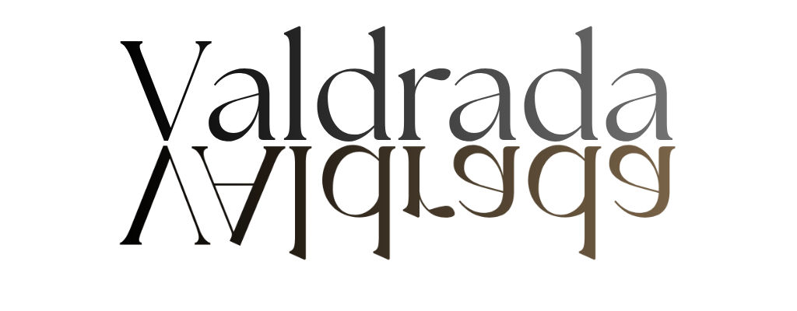
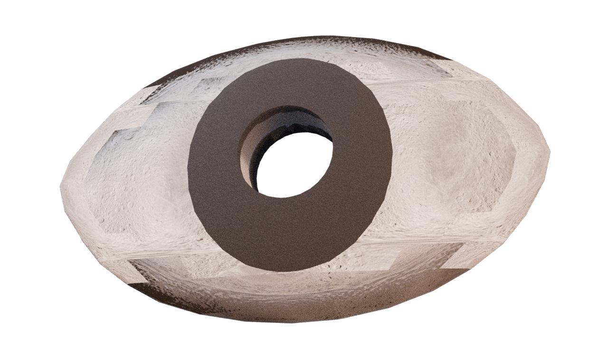
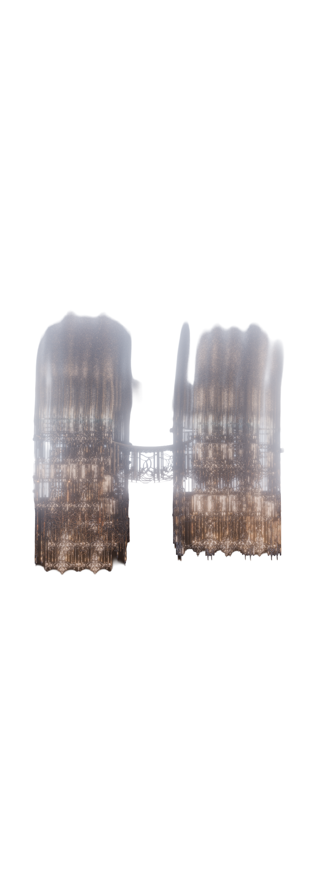
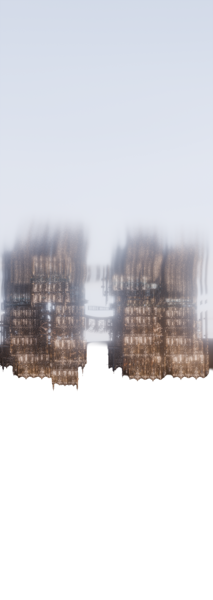

On the lake’s edge,
Valdrada’s early builders set up
veranda after veranda
and raised streets whose railings
turn toward the
w
a
t
e
r
.
When you approach it,
you see two cities at once:
the one standing above the lake,
and its perfect, upside-down double held in the surface below.
Nothing in the upper city is left unreflected.
Every edge,
every room,
every gesture is repeated in the water.
The reflection does not treat everything equally.
Some things gain weight in the water;
others lose it.
The two Valdradas depend on the other,
locked in constant attention.
But there is no affection in this arrangement,
only the fact of being seen.





